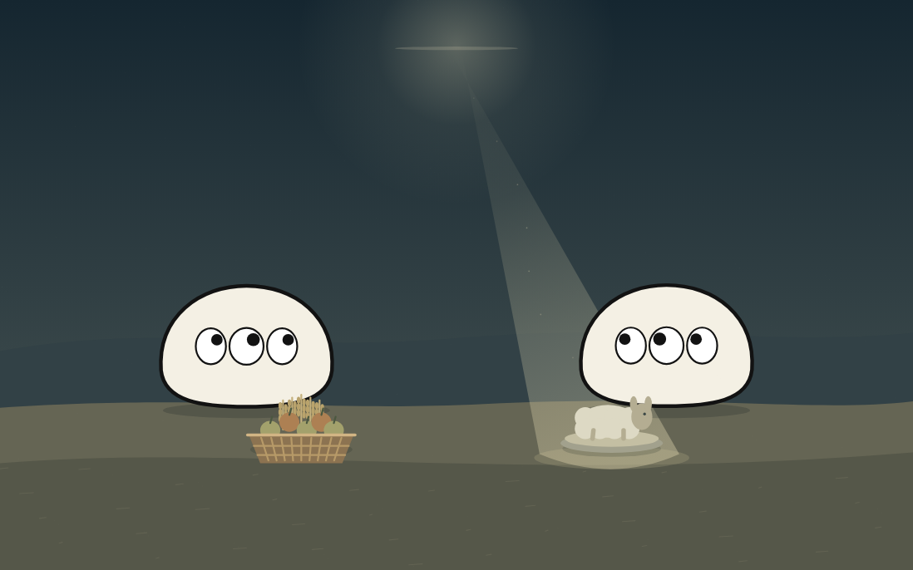
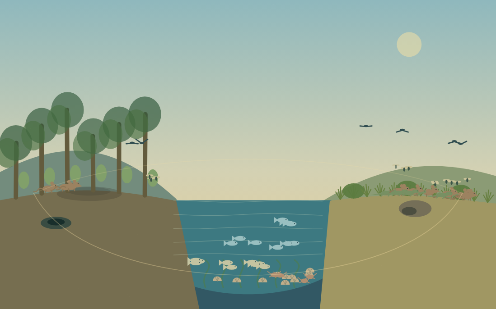
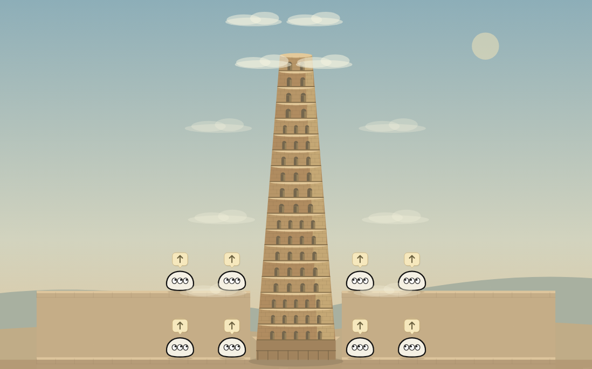
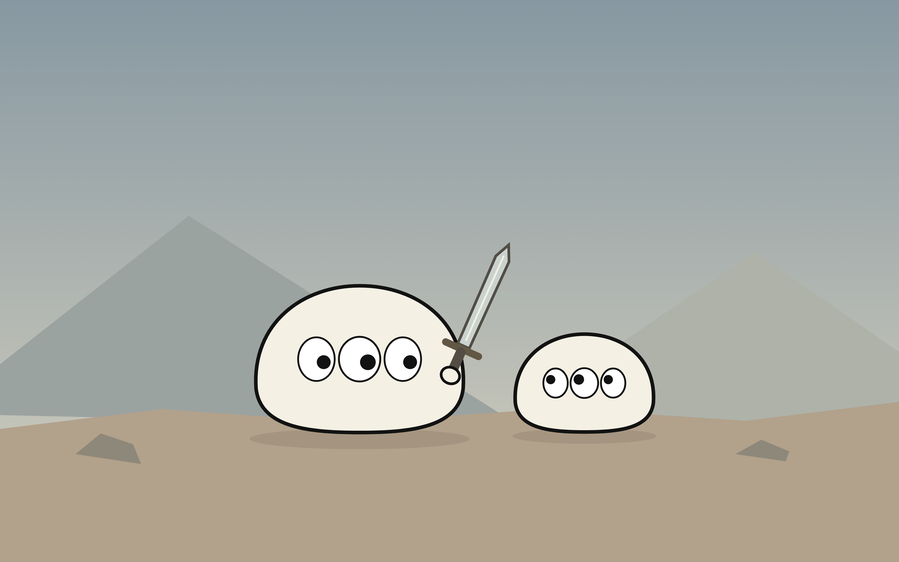

物語に、触れる。Touch the story.
BIBLE
Sketch
読むことから、つくることへ。
聖書の物語を、あなたの手でほどいていく。From reading to creating.
Explore the stories of the Bible with your own hands.
はじめに、光があった。In the beginning, there was light.
NO. 001 · GENESIS 1:1–2:3
天地創造 ↗Creation
六日間でつくる、あなただけの世界。Six days to create a world of your own.

怒りの、向かう先。Where anger turns.NO. 002 · GENESIS 4:1–16
カインとアベル ↗Cain and Abel
残されるのは、誰だろう。Who remains?

生命が、次の世界を渡る。Life crosses into the next world.NO. 003 · GENESIS 6–9
ノアの方舟 ↗Noah’s Ark
一度の落下。その先に残る、生命。One fall. The lives that endure.

別々の考えから、同じ空へ。Different intentions. A shared sky.NO. 004 · GENESIS 11:1–9
バベルの塔 ↗Tower of Babel
みんなの矢印が、塔をつくる。Together, the arrows build a tower.

この選択を、誰が迫るのか。Who demands this choice?NO. 005 · GENESIS 22:1–19
イサクの燔祭 ↗The Binding of Isaac
親と子。二つの選択、その先。Parent and child. Two choices, unequal outcomes.